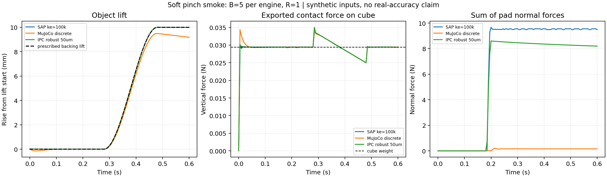
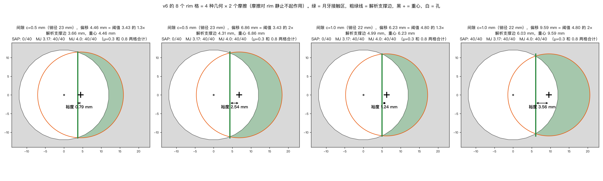

Progress update · 2026-11-03 – 11-17
两周进展汇总
按时间线整理：从 SAP bug 修复开始，到四引擎统一对比、IPC a3、新增诊断和仍待修订的实验设计问题。每节先给结论，再给数字和出处。
一页结论
SAP 修复后，在接触稳定性、摩擦和不穿透上整体领先 MuJoCo Warp；它的弱项是碰撞反弹，以及孔口接触生成（根因已定位在碰撞模块）。
- SAP 有两个 bug，已修复。之前好几个 SAP 结论其实是这两个 bug 造成的，相关结果已撤回或重跑。以后跑 SAP 之前必须先过 preflight。
- 四个引擎已在同一协议下完成主要任务：SAP、MuJoCo Warp 4.0、Genesis Rigid、Genesis IPC（a3）。SAP 在接触稳定性和摩擦类任务上最好，在 bounce 上明显差；pinch 和 cube-tail 区分不出引擎。
- SAP 在孔口翻倒的根因找到了，问题在碰撞检测，不在求解器。SAP 的碰撞模块是上游 Newton 的一份旧快照，而上游已经修了这个问题。只换成新版 Newton 碰撞检测，本地诊断从 2/8 提升到 6/8。
- IPC 的初版结果作废，修正后的 a3 有 5 个任务可直接比较。初版的问题是默认 Newton 容差把摩擦变成了粘性。a3 里 cube-toss 冻结的是默认数值设置；cube-tail 因为继承了这套设置，0/5760。
- 新增两组诊断：不穿透上 IPC 最好，其次 SAP，MuJoCo 最差；软垫夹取 B=5 smoke 15 个配置中 10 个健康，三个引擎都有可用配置。
1. SAP 的两个 bug 和撤回的结论 正式
11-03 – 11-04。之前好几个 SAP 结论其实是 bug 造成的，不是物理效应。
| Bug | 范围 | 原因 | 造成的错误结论 |
|---|---|---|---|
| A | 只影响 CPU | free_motion.py::_eval_body_force_backward_tiled 没有写 stride 循环，而 CPU 上 block_dim = 1，所以每个 world 只有 body 0 受重力和 body_f | CPU pinch 17 个 cell 全部判为 retain，其实方块没有重量 |
| B | CPU 和 GPU 都有 | batch 中已经收敛的 world 的 contact_gamma 被清零。物理过程不受影响，只是力的读数错了 | pinch 0.3 mm 预载读成 1.3–1.6 N（真值 5.455 N）；cube-tail 的 "67% 支撑脉冲"；three-plate 的载荷闭合 |
同时修掉了 runner 和指标上的问题：three-plate 的冲量除的是常数 DT，不是实际步长，所以 dt 迁移那组 "50% / 100% 载荷误差" 是假的；cube-toss 的朝向误差没有考虑立方体的 24 重对称。修复后在 CUDA 上重跑，场景、种子和候选参数都不变：
| 任务 | 修复前 | 修复后 |
|---|---|---|
| three-plate 留出集（8 个 cell） | h=10 mm 1/20；dt 0.25 / 1 ms 0/20 | 8/8 个 cell 全部 20/20，载荷误差 ≤ 0.05% |
| simple pinch 17 个 cell | 307/340 | 340/340 |
| cube-tail 静止段（640 个 world） | 闭合误差 33% | 0.0024% |
| cube-toss loss，改用对称朝向后 | SAP 0.119 / MuJoCo 0.123 | SAP 0.059 / MuJoCo 0.074 |
流程上：任何 SAP sweep 之前必须先通过 sap_preflight.py --compare-devices，已写入 task_runner_sop.md §5。详见 exp-report/sap-force-readout-audit.md
2. 对齐审计与 strict 重跑 正式
11-04 – 11-10。用修好的 SAP、按统一协议把所有任务重跑一遍，途中又修正了一批对齐问题。
- MuJoCo 的载荷读数取错了 efc 行。改正后，原来的 75% 误差其实只有 0.3–0.8%。
- three-plate 的 yaw 扰动被写进了 quaternion 的 x 分量，实际变成了倾斜。
- ContactNets 的角速度被多乘了一个尺度因子，小了 19 倍。
- 旧版 GAUGE slope 中 SAP 的板子是固定的；旧版 MIT push 的地面摩擦没有对齐。
- SAP 会忽略 shape 的
restitution字段。MuJoCo Warp 在 GPU 上，重复运行结果不完全一致（非确定性）。
两项结论被修正：
- three-plate：ground 的摩擦系数改成和板子一样的 0.8 后重跑，SAP 240/240，MuJoCo 3.17 128/240。
- three-box：撤回 "500/500 全对" 的说法。MuJoCo 的 NaN 之前被默认归为 retain，现在记为 invalid，并逐步检查容量溢出。重放结果为 485/500。
3. 四引擎统一对比
11-10 – 11-16。held-out 结果，同一指标、同一分母。loss 越低越好。
| 任务 | SAP 正式 | MuJoCo Warp 4.0 待审计 | Genesis Rigid 正式 | Genesis IPC a3 初查 |
|---|---|---|---|---|
| three-plate（通过数） | 240/240 | 112/240 | 224/240 | 220/240 |
| three-box（有效且正确） | 500/500 | 490/500 | 500/500 | 500/500 |
| simple pinch | 380/380 | 380/380 | 380/380 | 380/380 |
| cube-tail | 5760/5760 | 5760/5760 | 5760/5760 | 0/5760（见下文） |
| cube-toss loss | 0.0327 | 0.0513 | 0.0521 | 0.0419（见下文） |
| ball bounce v2，dt 1/180 s | 0.165（8 个 cell 中 7 个有效） | 0.366 | 0.328 | 未跑 |
| ball bounce v3，dt 1/900 s | 0.269 | 0.0762 | 0.0779 | 未跑（决定只报告） |
| GAUGE slope 轨迹 RMSE（m） | 0.0171 | 0.0162 | 0.0161 | 0.0184 |
| MIT push loss | 0.0074 | 0.0149 | 0.0165 | 0.0077 |
| pendulum v2 能量漂移 | 1.5e-3 | 5.0e-6（RK4） | 1.5e-3 | — |
怎么读这张表
- SAP 在接触稳定性（three-plate）和摩擦或推动类任务（cube-toss、MIT push）上最好。
- SAP 的 bounce 明显差：它的候选参数都达不到真实的 e≈0.7，而且它会忽略 restitution 字段。
- pinch 和 cube-tail 在 SAP、MuJoCo 和 Genesis Rigid 上都满分，这两个任务区分不出引擎。IPC 的 cube-tail 是 0/5760，原因见下面的 IPC 说明。
IPC a3 说明（11-16 跑完）
初版为什么作废。libuipc 默认的 Newton velocity_tol 是 0.05 m/s，低于这个速度的运动只解一步，摩擦就变成粘性，即 v = r·eps_v/2。初版里看到的"摩擦蠕变"和"摩擦太强"都是这个假象。a3 在候选 2–5 设 newton_tol=1e-4，力改用 IPC 直接读出的接触力，并加了 standoff 镜像 gate（three-plate ≤ 5% h，cube-tail ≤ 1 mm）。
- 可以直接比的 5 个任务是 three-box、pinch、three-plate、MIT push、slope，冻结的都是带
newton_tol=1e-4的候选。 - three-plate：12 个 cell 里 11 个是 20/20。唯一失败的是 0.5 mm 薄板：间隙 0.095 mm，超过 gate 要求的 0.025 mm。最小的候选 d_hat 是 0.1 mm，按构造就过不了。Genesis Rigid 也是在这个 cell 上失败的。直接读出的接触力和动量法算出的载荷相差 ≤ 5.5e-4 mg。
- three-box：retain cell 有 0.26–0.51 mm/s 的蠕变，和 eps_v = 1 mm/s 的摩擦平滑理论值一致，是模型本身的行为，不是数值问题。
- slope：静止 cell 的 RMSE 约 1.2 mm，基本就是 d_hat = 1 mm 造成的悬空间隙。MIT push：hex cell 的偏航误差约 0.38 rad，SAP 和 MuJoCo 在这里也有 0.3–0.9 rad，是所有引擎共有的。
- cube-toss（0.0419）：selection 选中的是 native default（tol 0.05，d_hat 10 mm），loss 0.0346，略好于第二名的 0.0372。按协议是合法的，但这正是有已知问题的那套配置，解读时要注明。
- cube-tail（0/5760）：它继承了 cube-toss 冻结的配置，静止时悬空 8.9 mm，全部只在 standoff 一项上失败。其他 gate 都过了，载荷误差 5.6e-6。这是继承规则和 IPC 悬空间隙之间的冲突。
4. 新增诊断：不穿透能力 诊断
11-17。一次性探测，30 分钟预算，不是协议任务。每个引擎用一套事先定好的参数，没有调参，三个引擎在同一块 RTX 3080 Ti 上运行。
4.1 重物堆叠
地面上放一个 10 g 的轻箱，上面压一个重箱，两个都是 2 cm。dt = 1 ms，模拟 1 s。每格两个数分别是地面–轻箱、轻箱–重箱两处接触；正数是穿透，负数是悬空，单位 mm。
| 重箱（质量比） | SAP（ke 1e6，tau 3 ms） | MuJoCo Warp（solref 0.012 2） | IPC（d_hat 0.1 mm） |
|---|---|---|---|
| 10 g（1） | 0.003 / 0.002 | 0.004 / 0.004 | −0.08 / −0.09 |
| 1 kg（100） | 0.08 / 0.12 | 0.22 / 0.22 | −0.08 / −0.09 |
| 10 kg（1000） | 0.72 / 1.18 | 2.21 / 2.21 | −0.08 / −0.09 |
- IPC 完全不穿透。载荷从 1 倍加到 1000 倍，悬空几乎不变，一直在 0.08 mm 左右。
- SAP 的穿透随载荷增大，但只有 MuJoCo 的约 1/3。
- 三个引擎都保持稳定，没有发散。
4.2 高速撞薄墙
10 mm、10 g 的方块飞向 2 mm 厚的墙，无重力，dt = 1 ms。最高速 20 m/s 时，方块每步移动 20 mm，是墙厚的 10 倍。
| 速度（每步移动） | SAP（ke 1e5，tau 3 ms） | MuJoCo Warp（MJCF 默认参数） | IPC（d_hat 1 mm，tol 1e-4） |
|---|---|---|---|
| 1 / 5 / 10 / 20 m/s（1 / 5 / 10 / 20 mm） | 全部挡住，停在墙前 | 全部穿过，连 1 m/s 也穿了 | 全部挡住，并反弹 |
和墙的最大重叠：IPC 是 0，SAP 约 0.0002 mm，MuJoCo 整个穿过去了。MuJoCo 默认的软接触时间常数是 20 ms，穿透深度约 20 mm，法向随之翻转，把方块从墙后推了出去。
结论
在不穿透这一项上，IPC > SAP > MuJoCo，SAP 在两项上都明显好于 MuJoCo。
注意事项：MuJoCo 撞墙用的是默认参数，不是冻结参数，换更硬的 solref 可能能挡住低速的情况。SAP 的 ke 是按场景设的：撞墙 1e5，堆叠 1e6。每个条件只跑了一次。IPC 的 0.08 mm 悬空本身也是一种位置误差。SAP 撞墙后"停住"、IPC"反弹"，两者都没有和期望的恢复系数做过比较。
数据：exp-results/ipc-strength-probe-20261117/（脚本为 tunnel_probe.py）
5. 新增诊断：软垫夹取 B=5 smoke 诊断
11-16。两块 FEM 软垫（使用公开的圆垫几何）夹住一个 3 g 方块，按规定轨迹抬升 10 mm。最终名义间隙 29.9 mm，dt = 1 ms，模拟 0.6 s。每个引擎 5 个候选，R = 1。输入是合成的，所以这不是真实间隙边界的验证；三个引擎的共享输入经核对数值一致（差异 ≤ 1e-20）。
| 引擎 | 健康 | 失败或无效 | 健康配置的表现 |
|---|---|---|---|
| SAP（CPU） | 5/5 | — | 全部夹住，抬升 9.999 mm，滑移 < 0.001 mm，静力校核和重力一致（误差 ≤ 1e-5） |
| MuJoCo 4.0（CPU，flex + Stable Neo-Hookean） | 4/5 | native 候选编译失败：SNH 必须用 discrete 积分器 | 全部夹住，抬升 9.18 mm，滑移 0.82 mm；尾段仍在动，不满足静力校核的前提 |
| IPC（GPU） | 1/5 | native：出现翻转单元；robust 100 µm：静力误差 10.85%，超过 5%；20 µm 和 10 µm：超过 300 s 时限 | robust 50 µm：夹住，抬升 9.998 mm，滑移 0.002 mm，静力校核误差 ≤ 1e-5 |
- 合计 15 个配置，10 个健康。三个引擎都至少有一个健康配置。超时没有物理意义，不能算作 drop。
- 运行时间只供诊断，不能作为速度排名：SAP 和 MuJoCo 在 CPU 上跑，IPC 在 GPU 上，而且是并发执行的。
- 这一轮只说明"三个引擎的软垫夹取都能跑通"。它不评估精度，因为所用的真实数据缺少同步的压入轨迹和夹爪宽度到垫面间隙的标定。

exp-results/soft-contact-v1/smoke-b5-20261116/results.csv；打包文件为 smoke-results.zip。6. SAP 孔口翻倒的根因 诊断 · 本地 CPU
11-15 – 11-16。问题出在碰撞检测，不在求解器。
- 现象：v6 rim 测试中，SAP 只有 40/160 次站住，MuJoCo 是 160/160。
- 原因 M1（已确认）：
multicontact.py拿距离平方和 eps = 1e-5 比较，等效的合并距离是 3.16 mm，比 2.36 mm 的孔口边还长，把关键接触点合并掉了。上游 Newton 已在 55caec0e（#4643）中改成eps*eps。 - 原因 M2（已观测）：窄重叠区域里，MPR 算出约 0.36 mm 的假间距，于是整对接触被丢掉。
- 验证：SAP 求解器不变，只把碰撞检测换成新版 Newton（8a656068），2/8 提升到 6/8。剩下 2 个是余量最小的条件。
- 还没做：移植进 SAP、在 GPU 上按正式协议复测、检查其他任务有没有回归。
- 修复方向：把 SAP 的碰撞模块同步到上游 Newton。这不只是替换一个文件，还要保留 SAP 自己的改动。

7. Round socket v8 draft 试跑 draft
在 46 个有标签的条件上，B=5 结果是 SAP 31/46、MuJoCo 35/46；B=1 是 SAP 24/46、MuJoCo 25/46。这次试跑不作为 headline，主要价值是暴露了 manifest 的问题：
- 选择规则把 unstable 排在 wrong 后面，导致 MuJoCo 的 0.6 档（7/8 次站住）输给了 1.2 档（0/8）。
- MuJoCo 在 dt = 0.5 ms 下够不到 0.15 mm 和 0.3 mm 两档，所以它只有 3 个候选，SAP 有 5 个。
- SAP 的 gap 等于最小间隙 0.1 mm，疑似导致 SAP 在孔口卡住。
- W 块的 hold 标准太松；I 块比较的其实是刚度档位，不是引擎（两者穿透约差 6 倍）。
- SAP 的孔口 bug（第 6 节）让它唯一有区分度的 selection 条件失效，所以 bug 修复后，SAP 的冻结矩阵要整体重跑。
8. Newton's cradle MuJoCo 正式SAP held-out 进行中
- 旧结果差的原因是 dt，不是 bug。用一维 toy chain 推算，在 dt = 1/180 s、接触时间远小于 dt 的情况下，backward Euler 必然给出 MTE≈0.667，和 SAP 实测的 0.678 吻合。只有 dt ≲ 0.01 × 接触时间时，结果才会收敛到 0.94。
- v4.2 重新设计。名义 dt 为 1/18000 s；候选参数按两球接触时长 T_c（1 / 2 / 4 ms）和阻尼比 ζ（0.01 / 0.05）对齐。
- SAP：5 个候选都过 gate，冻结为 Tc 4 ms、ζ 0.01。名义 MTE 0.809，真实值 0.930；native 为 0.234。
- MuJoCo 4.0：没有候选过 gate，停在 selection 阶段。低阻尼候选在第一次碰撞时就增加能量（MTE 0.98–1.42），dt 从 111 µs 降到 7 µs 这个现象都不变，所以不是步长问题，也没有求解器警告。native 有 71/200 出现 NaN。
9. 结果状态一览
| 内容 | 状态 | 位置 |
|---|---|---|
| SAP bug 修复与重跑 | 正式 | exp-results/protocol-v2-native-default/sap-fixed-db8d236-AB-20261104/ |
| SAP / MuJoCo 3.17 strict 重跑 | 正式 | exp-report/strict-rerun-progress-2026-11.md |
| MuJoCo Warp 4.0 的 7 个任务 | 跑完，待数值审计 | exp-results/mujoco-warp-4p0/ |
| Genesis Rigid | 正式 | exp-results/genesis-rigid-20261114/ |
| Genesis IPC a3 | 初查 | exp-results/genesis-ipc-a3-20261116/ |
| IPC 初版（11-15） | 作废 | exp-results/genesis-ipc-prelim-20261115/ |
| 不穿透 probe | 诊断 | exp-results/ipc-strength-probe-20261117/ |
| 软垫夹取 smoke | 诊断 | exp-results/soft-contact-v1/smoke-b5-20261116/ |
| SAP 孔口根因 | 诊断 · 本地 CPU，R = 1 | exp-results/round-socket-v6/rim-contact-diag/root-cause/ |
| Round socket v8 | draft | exp-results/round-socket-v8-draft/ |
| Cradle v4.2 | MuJoCo 正式 SAP 进行中 | exp-results/gauge-cradle-v42/ |
还没做的检查：MuJoCo 4.0 和 IPC a3 的独立重算；IPC a3 用 manifest sha 逐项核对。